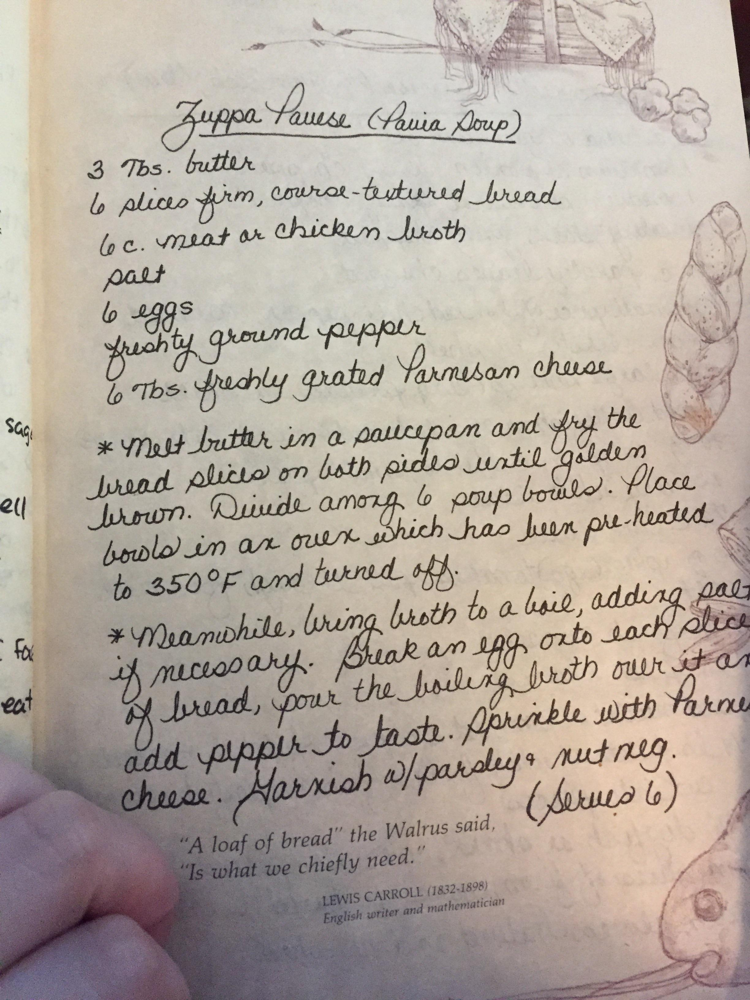
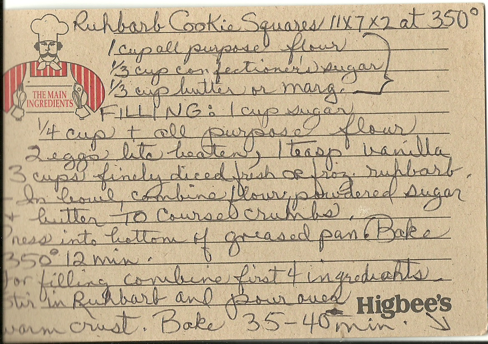

French Toast Cupcakes
A 2010s food-blog mashup of a Roman-era breakfast dish, with maple-cinnamon cream cheese icing.

Peanut Butter Fudge
Mrs. Bray's mid-century card, using "oleo," evaporated milk, and the pre-thermometer soft-ball test.

Three Fruit Marmalade
An Australian home cook's milder take on the Dundee tradition, from a kitchen in Killara, Sydney.

Dumplings
Four-ingredient Southern "slicks" — rolled and cut flat, dropped into broth, cooked until chewy.

Zuppa Pavese
The "soup of a king" from Pavia, Lombardy — legend traces it to a 1525 farmhouse and a captive Francis I.

Christmas Fruit Cookies
Doris Laiben's cookie-form fruitcake — dates, cherries, and nuts in a barely-there batter.

Rhubarb Cookie Squares
A two-layer Midwestern bar cookie on a Higbee's department-store card — Cleveland, Ohio.

Eagle Brand Ice Cream
A Borden marketing recipe engraved on wood — no eggs, no custard, just condensed milk doing the work.